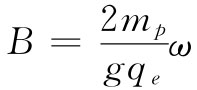

我们曾经说过，原子顺磁性很小，而核的磁性甚至比它还要小千倍。然而通过核磁共振的方法来观测核的磁性相对而言还是容易的。假设取一种像水那样的物质，其中全部电子的自旋都完全抵消，以致它们的净磁矩为零。但水分子仍将有非常非常微小的磁矩，那是由氢核的核磁矩引起的。假设将水的一个小样品放在磁场B之中。由于（氢的）质子具有1/2的自旋，所以它将有两个可能的能态。如果水处于热平衡状态，则将有较多一点的质子处在那较低能态——它们的磁矩方向平行于场的方向。在每个单位体积中就有一个小的净磁矩。由于质子磁矩仅仅约等于原子磁矩的千分之一，表现为μ2 的磁化强度——应用式（35.22）——大约只有典型原子顺磁性强度的兆分之一（这就是为什么我们得先挑选一种不具有原子磁矩的材料）。如果你把它算出来，那些自旋指向上的质子数目与那些自旋指向下的质子数目相差只有10-8 个，因而这效应的确十分微小！然而，它仍然可以按下述办法观测出来。
假设用一个能产生小水平振动磁场的小线圈把样品水包围起来。如果这个场以频率ωp 振动，则它将在两个能态之间诱导跃迁——正如在§35-3中我们曾对拉比实验所描述的那样。当质子从较高能态跃迁至较低能态时，它将放出能量μz B，而这正如我们曾经见到的，它等于ћωp 。如果它是从较低能态跃迁到较高能态，则它会从线圈那里吸收 能量ћωp 。由于处在较低态上的质子数目略微多于处在较高态上的，所以将从该线圈吸收 净的能量。尽管该效应十分微弱，但很小的能量吸收可以用一台灵敏的电子放大器观测到。
正如在拉比的分子束实验中那样，这能量的吸收将仅当振动场处于共振时、也即当
时才会被看到。通过保持ω固定不变而变更B来寻找共振往往较为方便。能量吸收显然将在

时出现。
一台典型的核磁共振仪器如图35-8所示。一个高频振荡器驱动着置于一对大电磁铁两极间的一个小线圈。两个绕于极尖上的小辅助线圈由60Hz的电流驱动着，以便整个磁场围绕其平均值作十分微小的“摆动”。例如，假设该磁铁的主电流被调至会产生一个等于5000Gs的磁场，而辅助线圈则围绕这一值产生±1Gs的变化。如果该振荡器被调至21.2MHz，那么当场每次扫过5000Gs时它就会处在质子的共振范围内了［应用式（34.13），对于质子要用g=5.58］。
图35-8 一台核磁共振仪器
这振荡器电路还被安排得能够给出一个附加的输出信号，这信号与从该振荡器所吸收的功率的任何改变 成正比。把这一信号馈入示波器垂直方向偏转放大器中。示波器的水平扫描在该磁场摆动的每一周中被触发一次（更一般的是，这水平偏转被制成与该摆动场的大小成正比）。
在样品水还未放进该高频线圈内之前，从振荡器所吸收的功率为某个值（它不会随磁场改变）。然而，当一小瓶水放进线圈中时，示波器上就出现一个如图所示的信号。我们见到由于质子翻转所引起的功率被吸收的一个图像！
在实践中，很难掌握如何把主磁场恰恰调至5000Gs。人们所做的是将主磁电流调至使共振出现在示波器上为止。结果证明，这是目前对磁场强度做出精密测量的最方便办法。当然，过去为了测定质子的g值有人 不得不精确测量磁场和频率。但现在这件事已经完成了，因此如图所示的质子共振仪就可用作“质子共振磁强计”了。
应该提一句关于该信号的形状。假如磁场十分缓慢地摆动，就会期待看到一条正常的共振曲线。当ωp 恰好达到振荡器频率时，能量吸收就会显示出一个极大值。在附近的频率处也有一些吸收，因为并不是所有质子都处在完全相同的场内——而不同的场就意味着稍微不同的共振频率。
顺便说说，人们也许会怀疑，在共振频率是否真的会看到任何信号。我们应否期望该高频场会使那两个态的粒子数相等——使得除了水刚放入时之外就该没有任何信号？不完全是这样，因为尽管我们试图 使该两个粒子数相等，但热运动方面却力图保持对于温度T的粒子数的适当比率。如果处于共振态，则被核所吸收的功率恰好就消耗在热运动上。然而，在质子磁矩与原子运动之间只有相对微弱的“热接触”。质子被相对彻底地隔离于电子分布的中心。因此在纯水中，该共振信号实际上往往太小，难于被观察到。要增加吸收，就必须加强“热接触”。这通常是在水中添加一点点氧化铁而做到的。这些铁原子像小磁体一样，当它们以其热舞蹈的方式到处跳动时，就会在质子上造成一种微小的摆动磁场。这些变化着的场会把质子磁体与原子振动“耦合”起来并往往会建立起热平衡。正是通过这一“耦合”，才使处于较高能态上的那些质子能够消耗它们的能量，以便再有可能从振荡器吸取能量。
实际上核共振仪的输出信号看来并不像一条正常的共振曲线。经常是一个更复杂的还含有一些振动的信号——像图上所画出的那样。这种信号的出现是由于变化磁场引起的。解释应该由量子力学来提供，但也可以证明，在这种实验中有关进动磁矩的那些经典概念总会给出正确的答案。按照经典理论，我们应该说，当到达共振时就开始同步地驱动大量进动着的核磁体。当这样做时，就使它们一起共同进动 。当这些核磁体全部一起转动时，将在振荡器线圈中建立起一个频率为ωp 的感生电动势，但由于磁场正随着时间增加，所以进动频率也将随着提高，因而这感生电压立即就会处在比振荡器频率稍微高一点的频率上。当这感生电动势与振荡器间交替地处于同相与异相时，该“被吸收”功率就会交替地变成正或负。因而在示波器上我们就会见到在质子频率与振荡器频率之间的那种拍音。由于质子频率并非全都相同（不同质子会处在稍微不同的磁场上），而也可能由于来自水里氧化铁的干扰，那些自由进动着的磁矩不久就会异相，从而该拍的信号也消失了。
这些磁共振现象已有广泛应用，作为寻找关于物质的新情况的工具——特别是在化学和核物理上。不用说关于核磁矩的数值会告诉我们有关核的结构。在化学中，许多知识是从共振的结构（或形态）中弄清楚的。由于附近的核所产生的磁场，核共振的准确位置稍微有点移动，这取决于任一特定核本身所处的环境。测量出这些移动会帮助人们去确定哪些原子靠近其他哪些原子，并帮助解释分子结构中的细节。同样重要的是关于自由基的电子自旋共振。虽然在平衡时并不会出现于任意的非常大的范围内，但这种自由基往往是化学反应中的中间态。对电子自旋共振的测量是对自由基存在的一种精密检验，而往往也是理解某些化学反应机制的一把钥匙。
[1] 通常的钠蒸气大多是单原子的，虽则也有一些Na2 分子存在。
[2] 在上一章§34-2中曾令电子电荷为-qe ，因此那时qe 是正的。——译者注